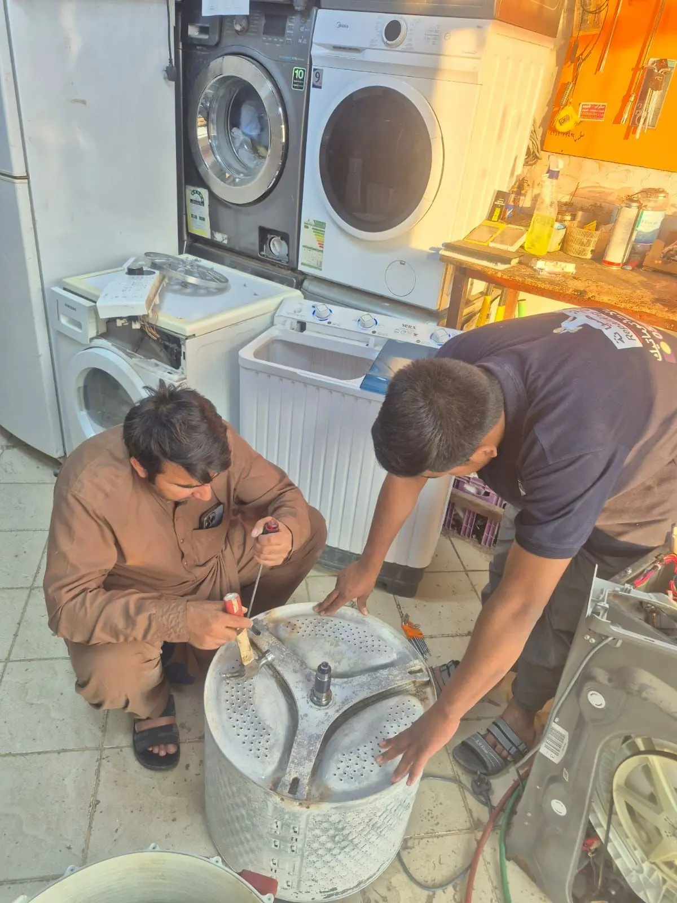

صيانة غسالات دايو في الرياض
نصلح غسالات دايو في بيتك داخل الرياض. يفحص الفني الغسالة ويخبرك بالعطل والتكلفة، ولا يبدأ العمل إلا بعد موافقتك.
نشر بواسطة إصلاح الغسالات الأوتوماتيكية · آخر تحديث: نوفمبر 2026
هذه الصفحة جزء من دليلنا لـ صيانة غسالات اتوماتيك في الرياض.

ما نوع غسالة دايو عندك؟
غسالات دايو منتشرة في البيوت السعودية، وتأتي بأكثر من تصميم. ومعرفة النوع تساعد، لأن لكل نوع أعطاله المعتادة.
- غسالة اتوماتيك علوية: الأكثر انتشارا في كثير من البيوت. التعبئة والغسيل والعصر تتم تلقائيا.
- نصف أوتوماتيك بحوضين: حوض للغسيل وحوض للعصر، وتنقل الملابس بينهما بيدك.
- فتحة أمامية: الباب في المقدمة والحوض يدور بشكل أفقي.
غسالة دايو لا تصرف الماء أو لا تعصر
هذان من أكثر الأعطال التي تصلنا. وفي كثير من الموديلات يكون السبب بسيطا: خرطوم تصريف مسدود، أو مضخة مسدودة، أو شيء عالق فيها مثل عملة أو جورب صغير.
إذا كانت الغسالة تعبئ وتغسل ثم تتوقف والماء داخلها، فراجع صفحة الغسالة لا تصرف الماء. وإذا كان الحوض لا يدور في آخر البرنامج، فاقرأ عن الغسالة لا تعصر. وفي الغسالات القديمة نصف الأوتوماتيك، ضعف العصر غالبا سببه سير متآكل أو جزء في المحرك، ويعرف الفني ذلك بعد الفحص.
صوت قوي في الحوض واهتزاز وتسريب
الصوت العالي أو الطرق في الحوض قد يأتي من حمولة زائدة، أو أرضية غير مستوية، أو رولمان بلي ومساعدات اهتزاز متآكلة. وتبديل الرولمان عمل أكبر، فمن الأفضل اكتشافه مبكرا. وفي مقالنا عن صوت واهتزاز الغسالة شرح للفرق بين الأسباب.
أما التسريب فيأتي عادة من خرطوم الدخول أو خرطوم التصريف أو جوان الباب في الفتحة الأمامية أو المضخة. وموضع البلل على الأرض كثيرا ما يدل على المصدر.
التايمر والبوردة وحساس الغطاء
كثير من غسالات دايو العلوية تعمل بمفتاح تايمر أو بوردة تحكم صغيرة. فإذا توقف البرنامج في منتصفه، أو تخطى مراحل، أو لم تستجب الأزرار، فقد يكون العطل في التايمر أو البوردة أو في فيش مرتخي.
وحساس الغطاء من الأعطال المتكررة أيضا. ففي معظم الغسالات العلوية لا تعبئ ولا تعصر إلا إذا أكد الحساس أن الغطاء مغلق، وقد يتعطل الحساس مع الاستخدام. نرجو ألا تتجاوزه بأي طريقة، فهو يحمي يدك من الحوض أثناء الدوران.
ماذا تخبرنا عند الاتصال؟
بعض التفاصيل تجعل الفني يصل مستعدا. أرسلها لنا اتصالا أو عبر واتساب على +966 59 116 1916.
- رقم الموديل، وغالبا يكون على ملصق في الخلف أو على حافة الغطاء أو داخل إطار الباب.
- النوع: علوية أو بحوضين أو فتحة أمامية.
- ماذا تفعل الغسالة ومتى تتوقف.
- أي ضوء أو صافرة أو رمز على الشاشة. الرموز تختلف بين الموديلات، فراجع دليل الجهاز واذكر لنا الرمز كما يظهر.
قبل وصول الفني
افصل الغسالة عن الكهرباء وأغلق صنبور الماء قبل أن تلمس أي شيء. لا تفتح أي جزء كهربائي. أخرج الملابس إن أمكن، واترك المكان حول الغسالة فارغا. تقييمنا 4.8 على جوجل من 264 تقييما، ونحرص أن تكون الزيارة سهلة: فحص في مكانه، وتكلفة معلنة قبل العمل، وضمان 30 يوما على القطع والعمل.
هل تستحق غسالة دايو القديمة الإصلاح؟
كثير من غسالات دايو في بيوت الرياض تعمل منذ سنوات. وهذا مؤشر جيد، لأن الغسالات البسيطة كثيرا ما تواصل العمل بإصلاحات صغيرة. فالسير أو المفتاح أو الخرطوم أو التايمر عمل محدود مقارنة بقيمة غسالة تعمل.
أما الإصلاحات الأكبر، مثل بلي الحوض المتآكل أو البوردة التالفة، فتحتاج إلى تفكير أكثر. ينظر الفني في الغسالة كلها، ويخبرك بالعطل والتكلفة، ويقول لك بصراحة إن كان يتوقع عطلا آخر قريبا. ثم تقرر أنت. وإن أردت أن تفكر فدليلنا عن إصلاح الغسالة أم استبدالها يساعدك.
وننصحك أن تذكر عمر الغسالة تقريبا عند الاتصال، وهل أُصلحت من قبل، فهذا يساعد الفني على تقدير ما ينتظره.
- أعطال يستحق إصلاحها غالبا: الخراطيم، مضخة التصريف، حساس الغطاء، السير، التايمر.
- أعطال تحتاج إلى نقاش: بلي الحوض، صدأ الحوض، بوردة تالفة.
خدمة مستقلة وليست مركز الصيانة الرسمي
نحن خدمة صيانة مستقلة، ولسنا مركز خدمة دايو الرسمي ولا وكيلا معتمدا. دايو اسم تجاري يظهر على الجهاز، ونحن نصلح الجهاز كما هو. وإذا كانت غسالتك ما زالت تحت ضمان الشركة فراجع الضمان أولا. وفي غير ذلك نأتيك في أي حي من الرياض، وغالب الإصلاحات تنتهي في اليوم نفسه.
الأسئلة الشائعة
في الغالب نعم. هذه الغسالات أبسط، وكثير من أعطالها في السير أو التايمر أو المفاتيح أو الخراطيم. ويخبرك الفني في المكان إن كان الإصلاح مجديا.
قد يكون حساس الغطاء أو التايمر أو البوردة أو وصلة المحرك. لا تضغط على الغطاء بالقوة. اتصل بنا مع رقم الموديل ووصف الصوت.
لا. يزورك الفني في البيت ويفحصها هناك. وإن احتاج العطل عملا أكبر شرحه لك قبل أن يبدأ.
نعم. نقدم ضمان 30 يوما على القطع والعمل.
أخبرنا ماذا تفعل غسالة دايو عندك
أرسل رقم الموديل ووصفا قصيرا للعطل. اتصل أو راسلنا واتساب على +966 59 116 1916 ونرتب لك زيارة في بيتك بالرياض.